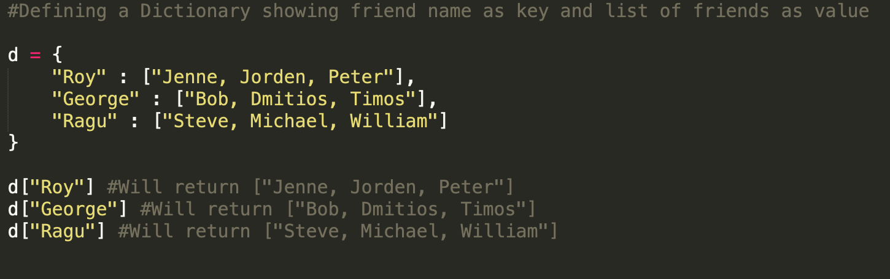

In python programming language, there are many built-in functions which can be used for implementing the usual data structures or operations in Python. Python programming language in general is designed in an unique way so as to provide maximum flexibility and functionality for the programmer. Here is the list of quite common data structures in python:-
While list, dict and tuple are ordered sequence of objects, Strings are an unordered sequence of characters.
Let's discuss each of this data structures. Lists are quite often used in python for storing the data such as numberd, strings etc. Generally a list is shown as:-
[1, 2, 3, 4, 5]. In order to declare a list we can simply use notation like
new_list = list() or
new_list = [1, 2, 3, 4, 5]. In order to print the elements of a list, we need to use something else like a loop. Which will go through each element in the list and will print it. The code doing this is
for i in new_list:
print(i) This kind of syntax is quite common in the world of Python Programming Language. Although we can make a list by using the similar kind of syntax. Let's see how:-
l = list() #Declearing a new list
for i in range(10): #Means i is from 0 to 9
l.append(i) #Means adding the numbers to list
So far we have seen that how does the list data structure can be used in python programming language. Now let's look into how Dictionary data structure can be used in Python programming language for storing data of different kinds, ultimately making code more robust and meaningful.
Dictionary is a quite common data structure which is used in Python programming language. In some of the coding interviews for a role as let's say "Python Developer" it's asked in questions like "What is a Dictionary?" or "How a Dictionary can be used in Python programming?" or may be "How to utilize Dictionaries to make code more robust?". Thus it's quite important to have through knowledge of the dictionaries. Let's see what is a Dictionary in Python. Talking about the Dictionary in general, it stores certain information about a key versus the value of key. Thus dictionary is just a collection of keys and values pairs, which makes this data structure quite efficient for storing and then accessing the data. Let's say a Python Programmer wanted to store the name of people and their friends in such a way that given a specific name, his/her friends list could be accessed. Let's see how this could be done in Python: -

That's the beauty of using Dictionary data structure, as it can as well contains the other data structures like lists, strings.
Dictionary can store information related to binary trees, linked data etc.
That's enough for list, dictionary data structures let's move on and see what's Tuple data structure in python. In general a
Tuple is quite similar to a List but it's immutable(
Meaning it's elements cannot be changes once assigned) a cool example can be like once you give birth to kids there is no way to change it.
An example tuple:-
t = (1, 2, 3, 4)(Ahah this looks quite similar to a list). Keep in mind that there does not exist any way to add the elements to a tuple or rather a new tuple need to be defined. Let's see how the tuple can be printed out.
new_tuple = (1, 2, 3, 4)
for i in new_tuple:
print(i)
1 #Printing out elements of list
2
3
4
Tuples can be proven quite useful, in cases where we need to have static hard coded data in the program. Which doesn't change throughout the program.
Moving on let's see last data structure which is strings. It's kind of quite interesting data structure as it's different from other data structures.
s = "Python" #Declearing a string of characters In the above case the string which is "Python" word is made up of characters added together. These characters are 'P', 'y', 't', 'h', 'o', 'n'. Seems quite amazing isn't it? This is the simples data structure in python as it can be just made by writing kind of plain, simple English. There are many operations which can be performed on these strings and thus can be altered or may be add something to it. For example:- this is the way to add a character to the string.
s = "Python"
s1 = s + 'e'
print(s1) #Pythone
But the key thing to be noted here is that when adding a character to a string Python does not add the character to the exiting string. On the other hand what Python does is to create a new string, adding a new character to it and then assigning it to a certain variable name.
One of the great thing about string data structure is that it can be quite easily printed, just putting the string name into a print() statement parentheses.
That's it for the Data Structures in Python Programming Language. I hope that you have enjoyed this and learned something about the python. For more information check out the official python documentation for data structuresClick Here.